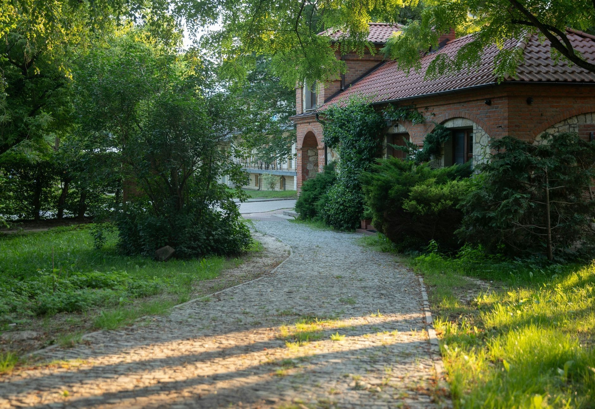
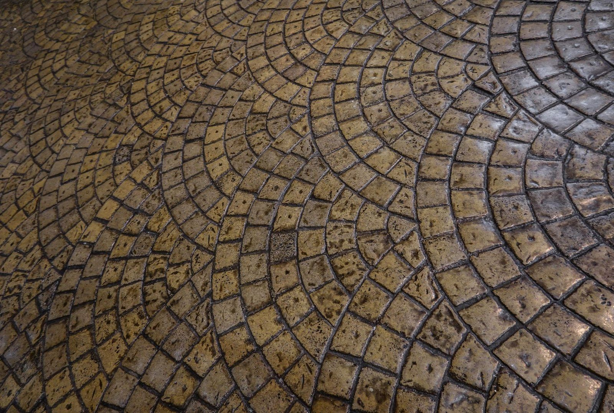
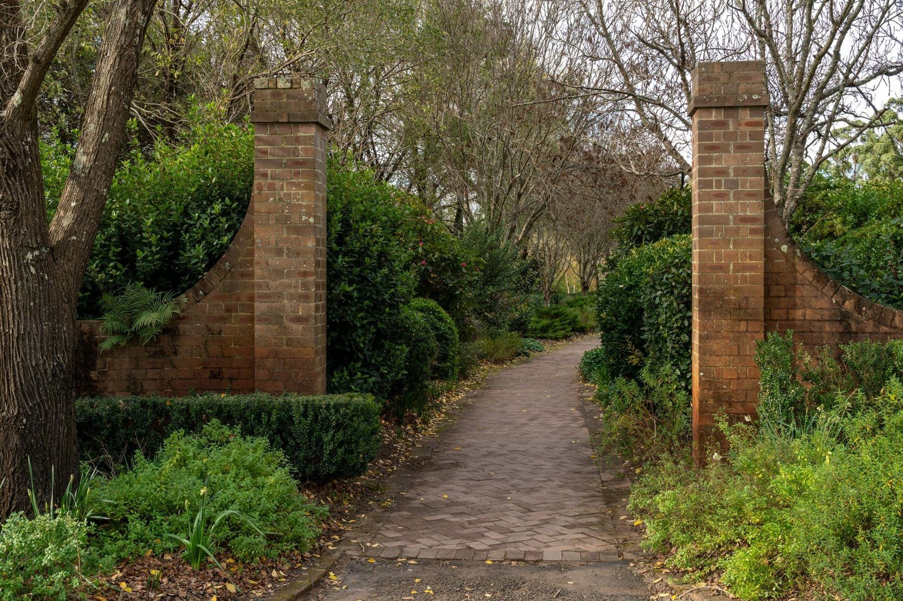

Brukarz w Przeworsku. Podjazdy, tarasy, place.
Zaczynam od koryta, spadków i zagęszczonej podbudowy, bo to one trzymają nawierzchnię. Kostka na wierzchu to ostatnie dni roboty.
Zadzwoń teraz +48 504 998 763- Bezpłatna wycena
- Dojazd: Przeworsk i okolice
- Gwarancja na robociznę


Wiesz, na czym stoisz - na każdym etapie
Od pierwszego telefonu do odbioru roboty - krok po kroku.
- 01
Dzwonisz
Telefon albo zdjęcia terenu. Po krótkiej rozmowie wiesz, czy to robota dla mnie i kiedy mogę być na pomiarze.
- 02
Pomiar i wycena
Na miejscu mierzę teren i sprawdzam grunt. Dostajesz jedną cenę za całość: materiał, robotę i wywóz ziemi z koryta.
- 03
Robota
Koryto, podbudowa, obrzeża, kostka - etap po etapie. Każdą warstwę możesz obejrzeć, zanim przykryje ją następna.
- 04
Odbiór i gwarancja
Przechodzimy razem po całej nawierzchni. Coś Ci nie gra - poprawiam, zanim rozliczymy robotę.
Z ostatnich robót
Każda z tych nawierzchni ma właściciela, który po niej codziennie jeździ albo chodzi. Bez dobierania kadrów i podkręcania kolorów.




Zakres robót
Najczęstsze zlecenia. Przy każdym piszę, co wchodzi w zakres.
- Podjazdy i dojazdyStary podjazd siada, kostka klawiszuje, po deszczu stoi kałuża? Rozbieram nawierzchnię, poprawiam podbudowę i układam kostkę od nowa - często z odzyskanego materiału, jak jest w dobrym stanie.Wycena →
- Tarasy i ścieżkiTaras i dojście do domu mają być równe, z lekkim spadkiem od ściany, żeby po deszczu woda nie stała przy drzwiach.Wycena →
- Place i parkingiUtwardzam place przy firmach, sklepach i halach - tam, gdzie codziennie wjeżdżają dostawy.Wycena →
- Palisady, obrzeża i schodyObrzeża i krawężniki to rama całej nawierzchni - osadzam je na betonie, bo bez tego kostka z czasem rozchodzi się na boki.Wycena →
- Odwodnienia linioweOdwodnienie planuję razem z nawierzchnią, nie po fakcie - wtedy korytka siedzą równo z kostką i nie ma progów, o które zahacza koło.Wycena →
- Podbudowa i korytowanieTo, czy nawierzchnia przetrwa, rozstrzyga się pod ziemią. Koryto na właściwą głębokość, geowłóknina tam, gdzie grunt słaby, kruszywo sypane warstwami - każdą przejeżdżam zagęszczarką, zanim wjedzie następna.Wycena →
Co mówią klienci
Miła obsługa ,szybka dostawa .Naprawdę polecamMarta Mrozik
Dojeżdżamy do Ciebie
Nie wiesz, czy dojadę do Ciebie? Zadzwoń i podaj adres. Jak nie dojeżdżam, powiem od razu i nie zajmę Ci dnia.
- Przeworsk
- + okolice
Dobrze wiedzieć
Ile kosztuje ułożenie kostki?
Zależy od terenu i materiału - inna cena wychodzi na piasku, inna tam, gdzie trzeba głębiej korytować i wywozić ziemię. Dlatego cenę podaję dopiero po pomiarze - i w trakcie roboty ona już nie rośnie.
Czy wycena jest płatna?
Nie. Za przyjazd i pomiar w Przeworsku i najbliższej okolicy nie płacisz. Decyzję podejmujesz po poznaniu ceny, nie przed.
Kostka z materiałem czy sama robocizna?
Oba układy są w porządku. Z materiałem ode mnie masz jedną cenę i jednego odpowiedzialnego za całość; z powierzonym - najpierw go obejrzę, bo nie każda kostka nadaje się pod auto.
Jak długo trwa taka robota?
Zależy od powierzchni i od tego, ile jest korytowania. Konkretny termin - od wejścia do odbioru - podaję przy wycenie i tego się trzymam. Ulewa potrafi przesunąć zagęszczanie o dzień; wtedy mówię od razu, nie po fakcie.
Co z ziemią z koryta i starą nawierzchnią?
Wywóz jest w wycenie - po robocie nie zostaje Ci hałda ziemi ani sterta starego betonu. Chcesz zatrzymać ziemię na podniesienie ogrodu? Powiedz przy pomiarze, zostawię ją tam, gdzie wskażesz.
Co, jeśli kostka się zapadnie?
Dobrze zagęszczona podbudowa nie siada - ale jak coś się ruszy, wracam i poprawiam. Moja wina - robię za darmo; wjechało tam coś dużo cięższego, niż ustalaliśmy - mówię wprost, co i za ile.
Potrzebujesz fachowca? Wycenimy za darmo.
Odezwij się - umówimy oględziny i usłyszysz konkretną kwotę. Za darmo.